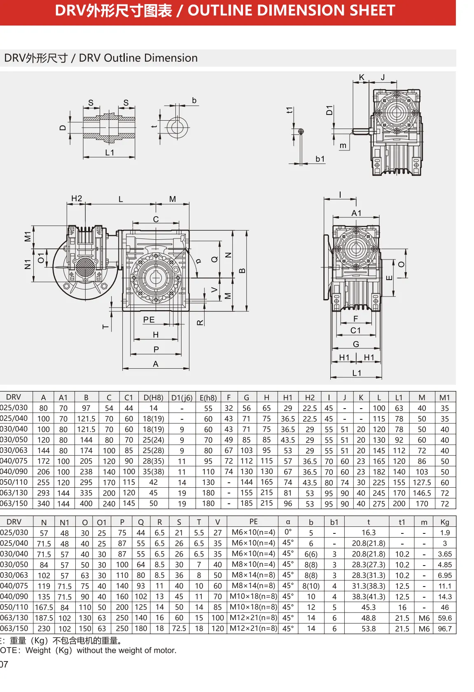
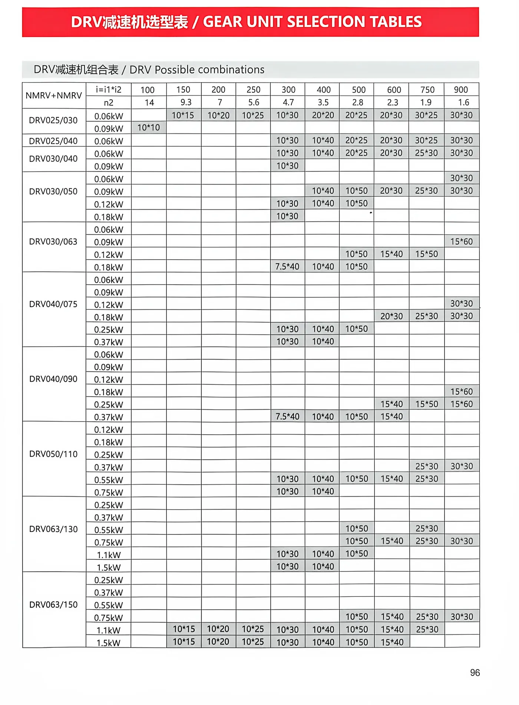

DOUBLE-STAGE WORM DRIVE
DRV Double Worm Gearbox + Three-Phase Motor
The SMK DRV assembly combines two NMRV-style worm reduction stages with an industrial three-phase motor. It is designed for applications that require a high total reduction ratio, very low output speed and compact right-angle transmission.
- Double worm reduction for high total ratios
- Listed ratios from 100 to 900
- Compact right-angle output arrangement
- Multiple DRV gearbox combinations
- Selection and mounting support from SMK
Typical Applications
DRV gear motors are suitable for conveyors, mixers, packaging machinery, lifting auxiliaries, dosing equipment and other machines that need low output speed and high overall reduction in a compact layout.
Selection Guidance
Choose the DRV combination using required output speed, load torque, motor power, duty cycle, mounting position and thermal conditions. The permitted gearbox pairing depends on both total ratio and motor power; use the supplied selection table and confirm the final configuration with SMK.
DRV Outline Dimension Sheet
All listed dimensions are in millimetres.

| DRV | A | A1 | B | C | C1 | D (H8) | D1 (j6) | E (h8) | F | G | H | H1 | H2 | I | J | K | L | L1 | M | M1 |
|---|---|---|---|---|---|---|---|---|---|---|---|---|---|---|---|---|---|---|---|---|
| 025/030 | 80 | 70 | 97 | 54 | 44 | 14 | — | 55 | 32 | 56 | 65 | 29 | 22.5 | 45 | — | — | 100 | 63 | 40 | 35 |
| 025/040 | 100 | 70 | 121.5 | 70 | 60 | 18 (19) | — | 60 | 43 | 71 | 75 | 36.5 | 22.5 | 45 | — | — | 115 | 78 | 50 | 35 |
| 030/040 | 100 | 80 | 121.5 | 70 | 60 | 18 (19) | 9 | 60 | 43 | 71 | 75 | 36.5 | 29 | 55 | 51 | 20 | 120 | 78 | 50 | 40 |
| 030/050 | 120 | 80 | 144 | 80 | 70 | 25 (24) | 9 | 70 | 49 | 85 | 85 | 43.5 | 29 | 55 | 51 | 20 | 130 | 92 | 60 | 40 |
| 030/063 | 144 | 80 | 174 | 100 | 85 | 25 (28) | 9 | 80 | 67 | 103 | 95 | 53 | 29 | 55 | 51 | 20 | 145 | 112 | 72 | 40 |
| 040/075 | 172 | 100 | 205 | 120 | 90 | 28 (35) | 11 | 95 | 72 | 112 | 115 | 57 | 36.5 | 70 | 60 | 23 | 165 | 120 | 86 | 50 |
| 040/090 | 206 | 100 | 238 | 140 | 100 | 35 (38) | 11 | 110 | 74 | 130 | 130 | 67 | 36.5 | 70 | 60 | 23 | 182 | 140 | 103 | 50 |
| 050/110 | 255 | 120 | 295 | 170 | 115 | 42 | 14 | 130 | — | 144 | 165 | 74 | 43.5 | 80 | 74 | 30 | 225 | 155 | 127.5 | 60 |
| 063/130 | 293 | 144 | 335 | 200 | 120 | 45 | 19 | 180 | — | 155 | 215 | 81 | 53 | 95 | 90 | 40 | 245 | 170 | 146.5 | 72 |
| 063/150 | 340 | 144 | 400 | 240 | 145 | 50 | 19 | 180 | — | 185 | 215 | 96 | 53 | 95 | 90 | 40 | 275 | 200 | 170 | 72 |
| DRV | N | N1 | O | O1 | P | Q | R | S | T | V | PE | α | b | b1 | t | t1 | m | Kg |
|---|---|---|---|---|---|---|---|---|---|---|---|---|---|---|---|---|---|---|
| 025/030 | 57 | 48 | 30 | 25 | 75 | 44 | 6.5 | 21 | 5.5 | 27 | M6×10 (n=4) | 0° | 5 | — | 16.3 | — | — | 1.9 |
| 025/040 | 71.5 | 48 | 40 | 25 | 87 | 55 | 6.5 | 26 | 6.5 | 35 | M6×10 (n=4) | 45° | 6 | — | 20.8 (21.8) | — | — | 3 |
| 030/040 | 71.5 | 57 | 40 | 30 | 87 | 55 | 6.5 | 26 | 6.5 | 35 | M6×10 (n=4) | 45° | 6 (6) | 3 | 20.8 (21.8) | 10.2 | — | 3.65 |
| 030/050 | 84 | 57 | 50 | 30 | 100 | 64 | 8.5 | 30 | 7 | 40 | M8×10 (n=4) | 45° | 8 (8) | 3 | 28.3 (27.3) | 10.2 | — | 4.85 |
| 030/063 | 102 | 57 | 63 | 30 | 110 | 80 | 8.5 | 36 | 8 | 50 | M8×14 (n=8) | 45° | 8 (8) | 3 | 28.3 (31.3) | 10.2 | — | 6.95 |
| 040/075 | 119 | 71.5 | 75 | 40 | 140 | 93 | 11 | 40 | 10 | 60 | M8×14 (n=8) | 45° | 8 (10) | 4 | 31.3 (38.3) | 12.5 | — | 11.1 |
| 040/090 | 135 | 71.5 | 90 | 40 | 160 | 102 | 13 | 45 | 11 | 70 | M10×18 (n=8) | 45° | 10 | 4 | 38.3 (41.3) | 12.5 | — | 14.3 |
| 050/110 | 167.5 | 84 | 110 | 50 | 200 | 125 | 14 | 50 | 14 | 85 | M10×18 (n=8) | 45° | 12 | 5 | 45.3 | 16 | — | 46 |
| 063/130 | 187.5 | 102 | 130 | 63 | 250 | 140 | 16 | 60 | 15 | 100 | M12×21 (n=8) | 45° | 14 | 6 | 48.8 | 21.5 | M6 | 59.6 |
| 063/150 | 230 | 102 | 150 | 63 | 250 | 180 | 18 | 72.5 | 18 | 120 | M12×21 (n=8) | 45° | 14 | 6 | 53.8 | 21.5 | M6 | 96.7 |
Weights are in kilograms and exclude the motor. Confirm the final dimensional drawing for the ordered configuration.
DRV Gear Unit Selection Table
Possible gearbox combinations depend on total ratio and motor power.

| Total ratio (i = i1 × i2) | 100 | 150 | 200 | 250 | 300 | 400 | 500 | 600 | 750 | 900 |
|---|---|---|---|---|---|---|---|---|---|---|
| Nominal output speed n2 (rpm) | 14 | 9.3 | 7 | 5.6 | 4.7 | 3.5 | 2.8 | 2.3 | 1.9 | 1.6 |
The detailed chart identifies permitted stage ratios for each DRV size and motor power. Confirm the selected pairing and service conditions with SMK.
Frequently Asked Questions
What is a DRV gear motor?
It combines two worm reduction stages with a three-phase motor to provide a high total ratio and low output speed.
What ratios are listed?
The supplied chart lists total ratios from 100 to 900, depending on gearbox combination and motor power.
What data is required for selection?
Send motor power, voltage and frequency, target output speed, torque, duty cycle, mounting position and operating environment.